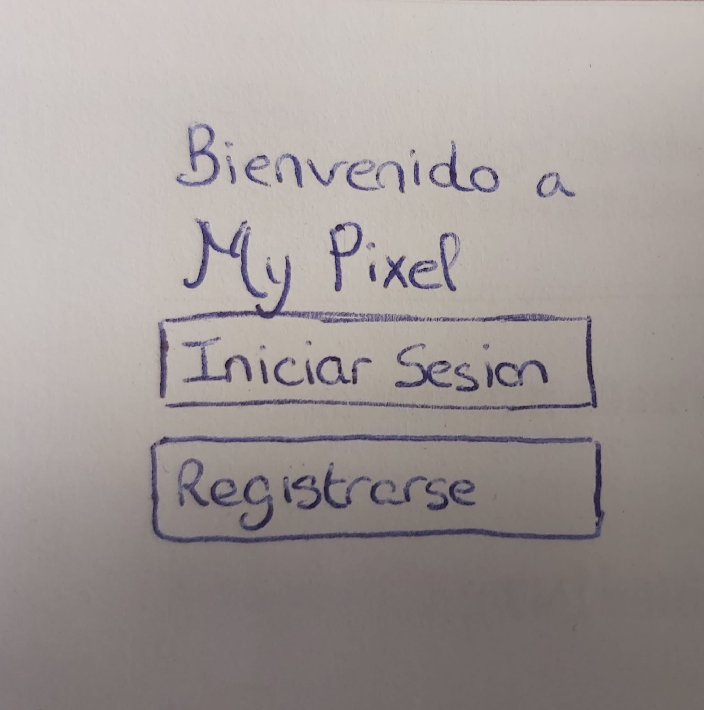
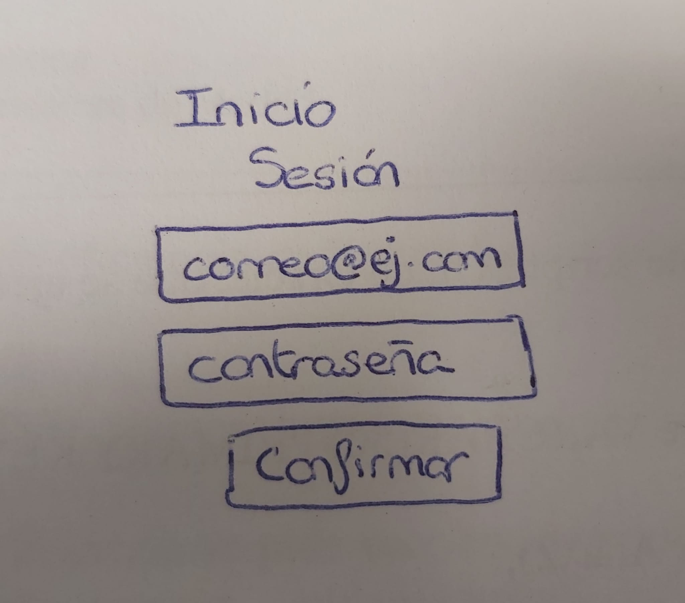
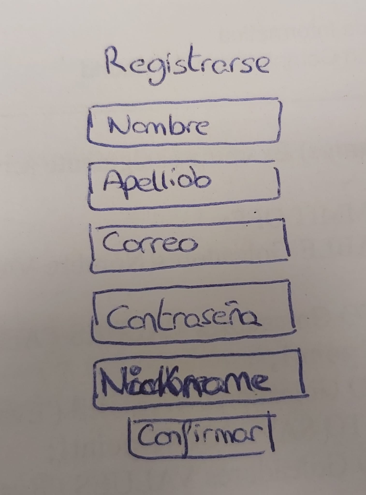
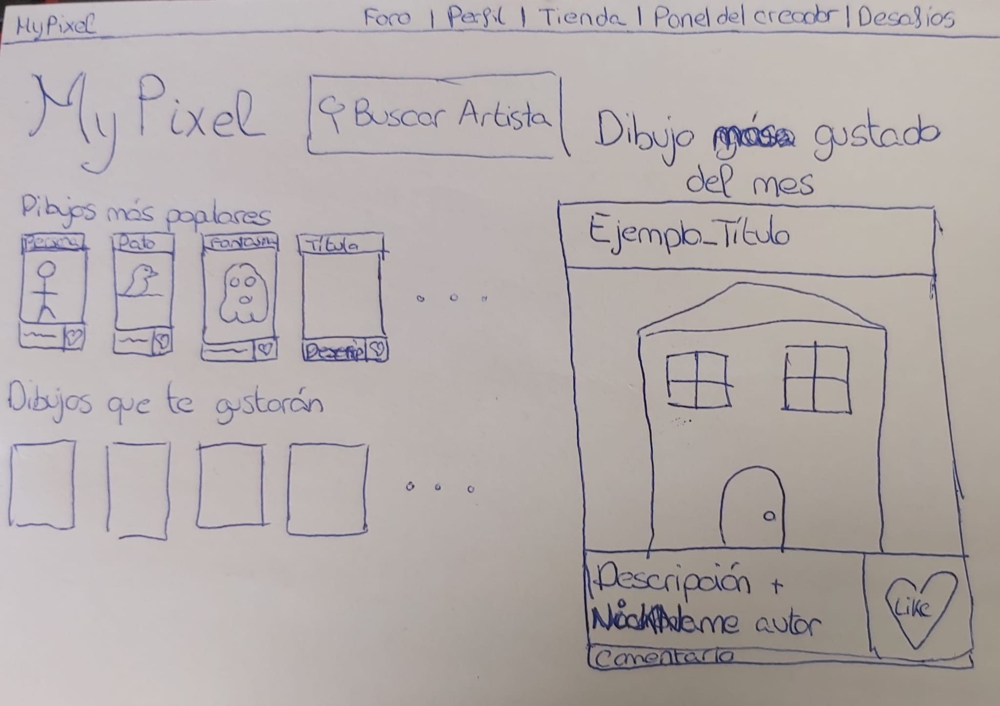
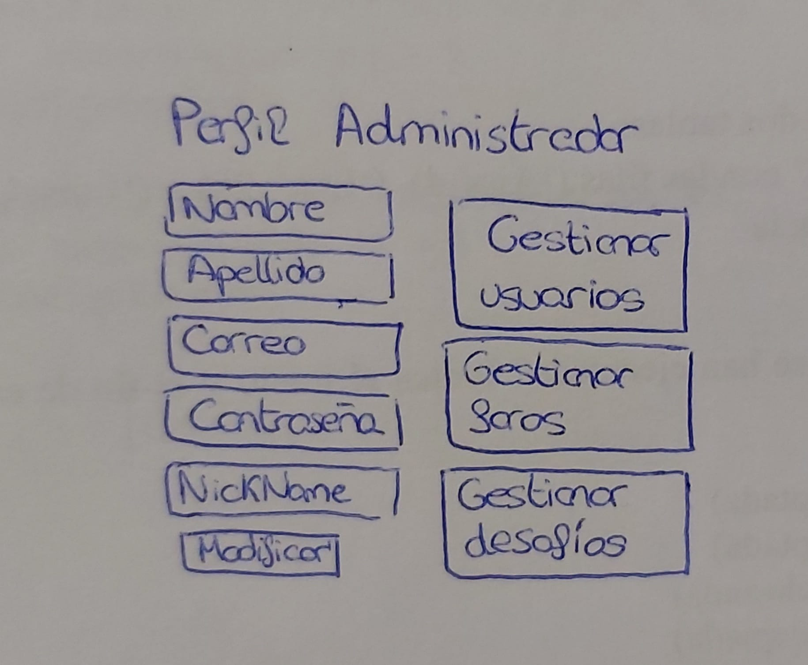
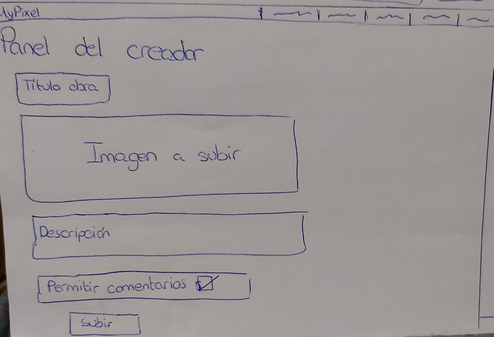
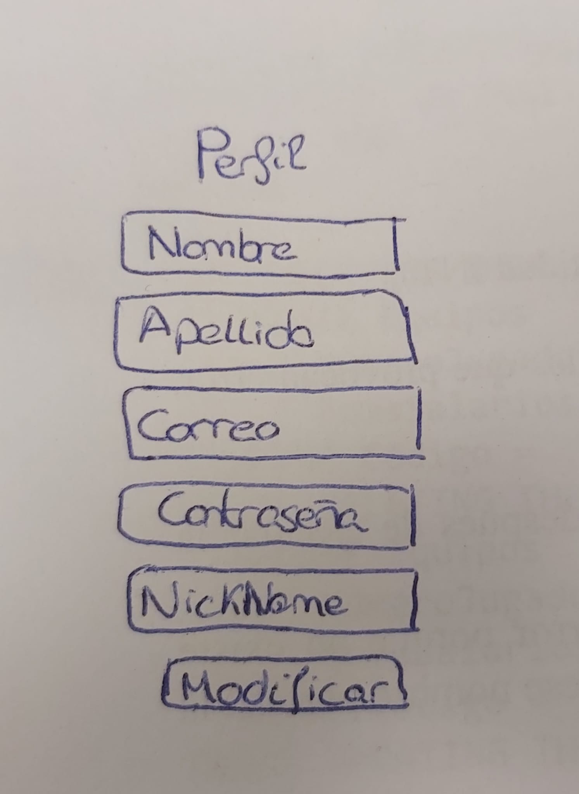
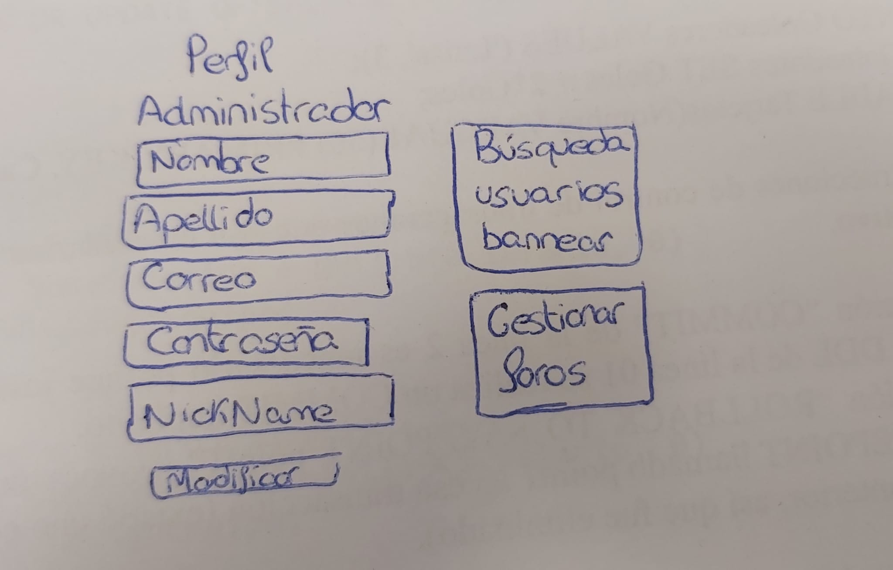
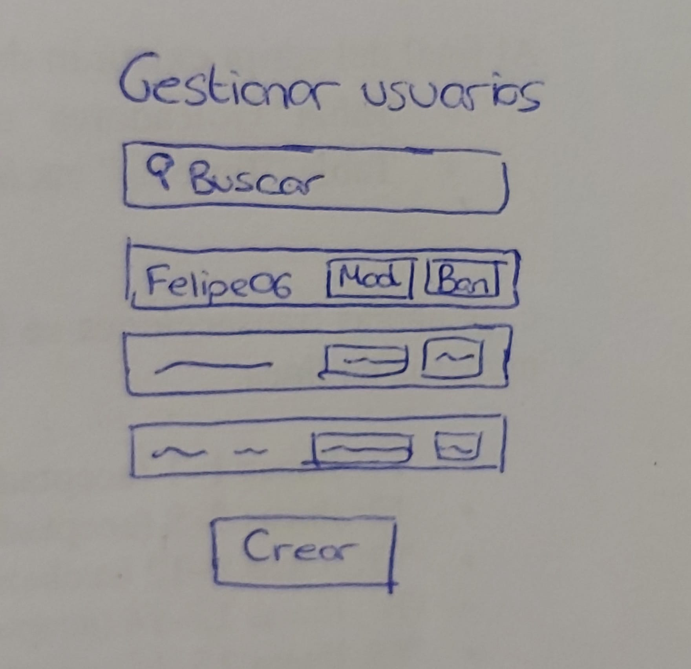
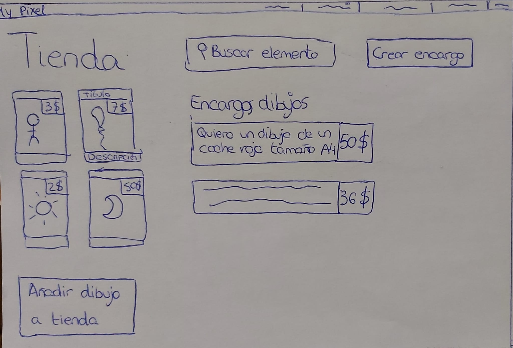

Index | Detalles | Bocetos | Miembros | Planificacion | Contacto
En esta página se hablará sobre el diseño de la página MyPixel, donde cuando se acceda a ella, aparecerá una página para elegir entre registrarse e iniciar sesión. Como se puede observar en la figura1. De aquí se accederá a las figura2 si se accede al inicio de sesión y a la figura3 en caso de registro. Una vez introducidos los datos correctos (usuario y contraseña validos para inicio de sesión y elementos clave no repetidos, contraseña valida, etc que mostrarán mensajes de error personalizados en caso de ser incorrectos) se redigirá a la página principal (figura4) donde existirá una barra superior con enlaces al perfil, a la tienda, al panel del creador, al foro y a los desafios. Esta barra se mantendrá para todas las distintas pestañas de la página. Debajo de esta barra aparecerán los distintos imágenes de píxeles recomendadas para ver. Para cada imagen existe la posibilidad de generar impresiones positivas así como de hacer comentarios sobre la misma.
  En la página de perfil se desplegarán los datos del usuario, dependiendo de su nivel. En el caso del usuario básico aparecerán los datos del registro donde este podrá cambiar dichos datos en función de que sigan cumpliendo los requisitos mínimos establecidos en el registro (figura5). Para los administradores se les mostrará una página similar, pero aparecerán más botones para poder hacer más getiones (figura6).
  Hablaremos ahora de la página de la tienda donde existen dos opciones a realizar, una es comprar un producto existente en la misma (por ejemplo el diseño de un cuadro) y la otra consiste en realizar o aceptar un encargo a otros usuarios de una imagen. Un ejemplo de esto sería crear un encargo de que quiere que alguien realice un cuadro de un pajaro amarillo de tamaño x. Los usuarios podrían realizar el encargo y hablar sobre él con el anunciante. En la figura7 se puede observar dicha tienda.
Continuamos con la página de desafíos (figura8) donde se podrá observar el nivel del usuario, los puntos de experiencia del usuario así como los puntos restantes para subir de nivel. También se podrán observar los desafíos activos con los que cuenta el usuario para poder realizar, así como su progreso en dichos desafíos.
Continuaremos con el foro (figura10) el cual consiste en un lugar donde la gente puede charlar sobre diversos temas o intentar promocionar sus encargos de la tienda para que alguien los realice.
Finalizaremos con el panel de creador (figura10) el cual consiste en poder subir archivos de local a la aplicación, aportando además un título para la obra que sube y una breve descripción.
